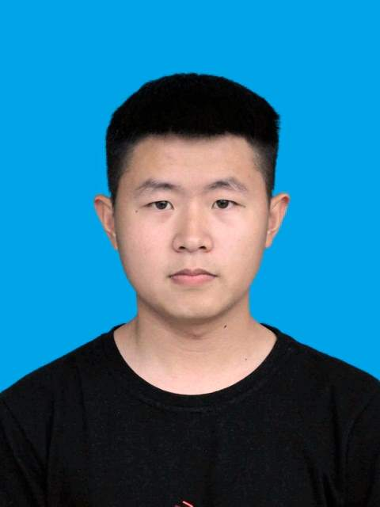

|  | M.Sc. Student, |
Currently I am a three-year M.Sc. student in the College of Information Science and Engineering, Linyi University.
Before that, I got my B.Sc. degree in the Cellege of Physics and Electronic Engineering in June 2020 from Linyi University.
M. S., Linyi University (LYU), Linyi, Shandong [2020.9 ~ Now]
|
B. Sc., Linyi University (LYU), Linyi, Shandong [2016.9 ~ 2020.7]
|
TCGAN: A transformer-enhanced GAN for PET synthetic CT
Jitao Li ; Yue Yang; Fuchun Zhang; Meng Li; Zongjin Qu; Shunbo Hu
Biomedical Optics Express, Manuscript Accepted, SCI, 2022.
Small animal PET to CT image synthesis based on conditional generation network
Jitao Li ; Yuwen Wang; Yue Yang; Xin Zhang; Zongjin Qu; Shunbo Hu
2021 14th International Congress on Image and Signal Processing, BioMedical Engineering and Informatics (CISP-BMEI), EI index, 2021.
DWD-net: Cascaded local and global deep learning network for brain MR registration
Yue Yang; Yuwen Wang; Jitao Li ; Lintao Zhang; Shunbo Hu
2021 14th International Congress on Image and Signal Processing, BioMedical Engineering and Informatics (CISP-BMEI), EI index, 2021.